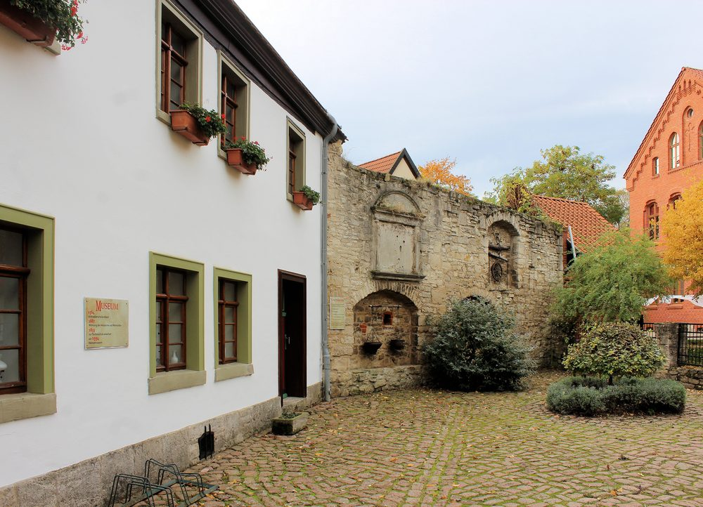

Das Haus
Vier Nutzungen
in einem Gebäude
Bruchstein unten, Fachwerk oben, ein Stück Stadtmauer im Hof: Das Museumsgebäude erzählt seine eigene Geschichte, bevor die Ausstellung beginnt.
Die vier Nutzungen auf der Haustafel
1564
Als Knabenschule erbaut.
1687
Wohnung der Hebamme und Wehmutter.
1833
Zur Töchterschule erweitert.
seit 1994
Heimatmuseum der westlichen Börde.
So steht es auf der Tafel neben der Eingangstür. Vier Zeilen, 430 Jahre.
Der Bau
Ein Schulhaus
aus dem 16. Jahrhundert
Das Erdgeschoss ist aus dem hellen Bruchstein gemauert, den die Börde hergibt. Darüber sitzt ein Fachwerkgeschoss mit dunklen Balken und Andreaskreuzen, darüber ein Ziegeldach. Gebaut wurde das Haus 1564 als Knabenschule.
Über die Jahrhunderte wechselte die Nutzung dreimal. Am Ende des 20. Jahrhunderts stand das Gebäude leer und verfiel. Es folgte eine aufwendige Restaurierung; 1994 zog das Museum ein.
- Denkmalgeschützt, im Denkmalverzeichnis als „Heimatmuseum, vormals Schule“ geführt.
- Rund 260 Quadratmeter Ausstellungsfläche.
- Anschrift Am Kirchhof 2–3 — zwei Hausnummern für ein Gebäude.


Der Kirchhof
Das Haus steht
nicht allein
Um das Museum herum liegt der alte Stadtkern: die Kirche St. Martin mit ihrer historischen Orgel, Reste der Stadtbefestigung aus dem 13. Jahrhundert mit dem Ulenturm, das Rathaus aus dem 16. Jahrhundert.
Ein Stück der Stadtmauer begrenzt den Museumshof. In ihre Rundnischen ist gehängt, was auf den Höfen der Börde in Gebrauch war — Wagenrad, Kummetstangen, Ketten. Die Nische als Form kehrt auf dieser Website wieder.
Die Stadt
Reithufenstadt
Kroppenstedt
Was das Museum sammelt, kommt aus einer Stadt mit langer und ungewöhnlich gut dokumentierter Geschichte.
934
Erste urkundliche Erwähnung: König Heinrich I. überträgt Besitz unter anderem in Kroppenstedt an den Grafen Siegfried.
1253
Kroppenstedt erhält das Stadtrecht.
Freikreuz
Ein barockes Sandsteinkreuz in der Stadt steht als Zeichen der städtischen Freiheit.
1 329
Einwohnerinnen und Einwohner am 31. Dezember 2025.
Den Beinamen „Reithufenstadt“ trägt Kroppenstedt nach seiner alten Form der Landvergabe. Aus derselben Tradition stammen die Kroppenstedter Reiter, denen im Museum ein eigener Teil der Ausstellung gilt.
Weiter
Und was liegt
drinnen?
Apotheke, Klassenraum, bürgerliche Wohnkultur, bäuerliche Arbeitsgeräte — und drei Stücke, für die Leute eigens herfahren.